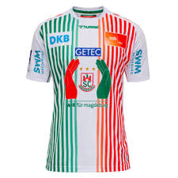
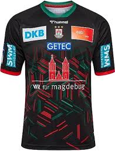
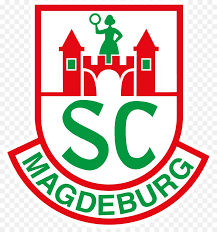
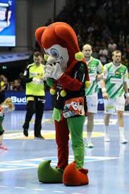
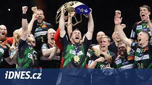

SC Magdeburg
DRESY
Dresy Magdeburgu bývají vždy velmi pestré a barevné, vždy, ale mají podklad na bílé či černé barvě


LOGO
Hlavním znakem Magdeburských gladiátorů je kašpárek, mají ho jako maskota i v logu. Hlavními barvy Magdeburgu je zelená a červená


HISTORIE
Magdeburg se až v posledních letech začal pořádně prosazovat mezi světovou elitu. V sezóně 22/23 vyhrál ligu Mistrů i Německou bundesligu.
